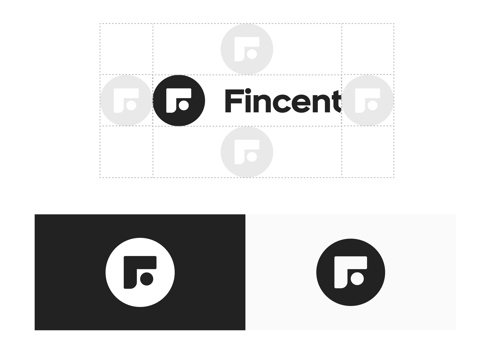
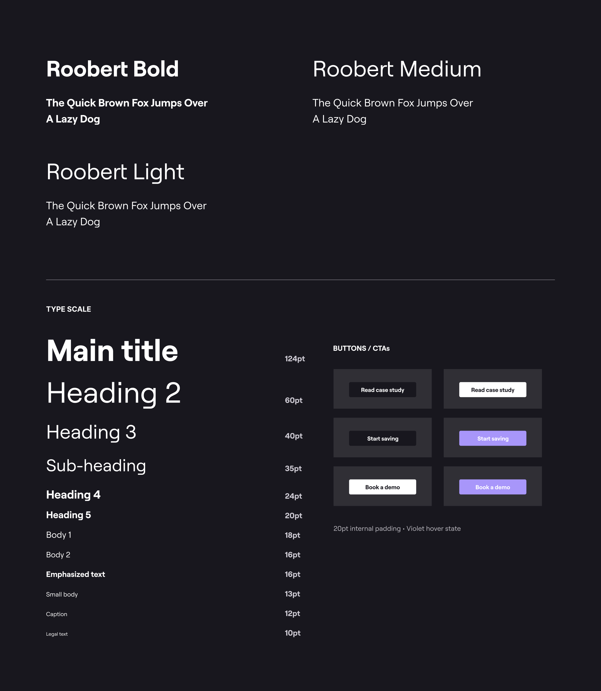
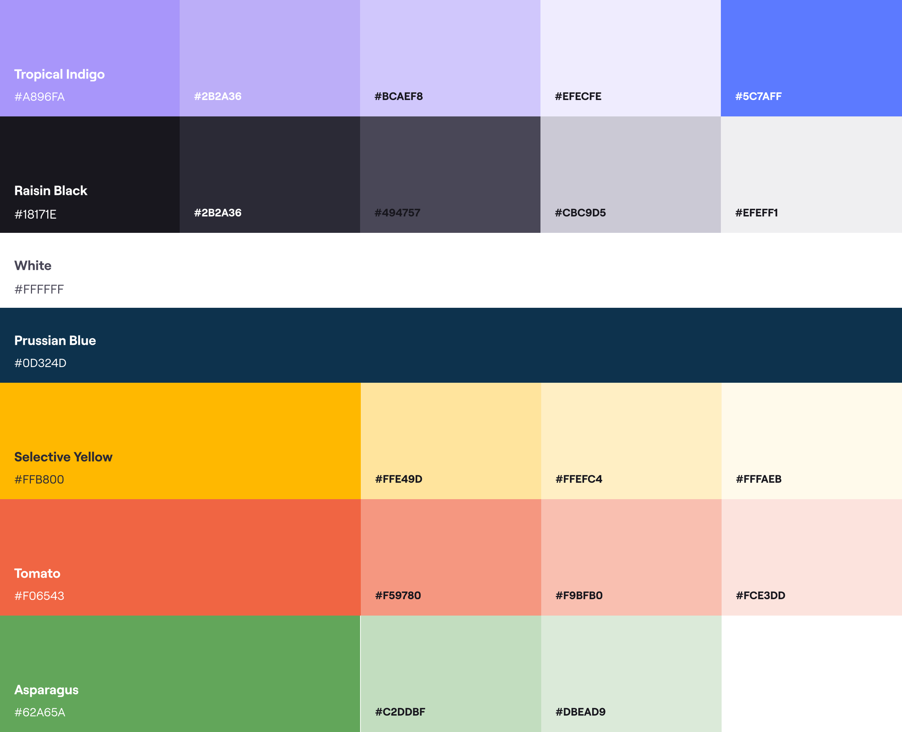
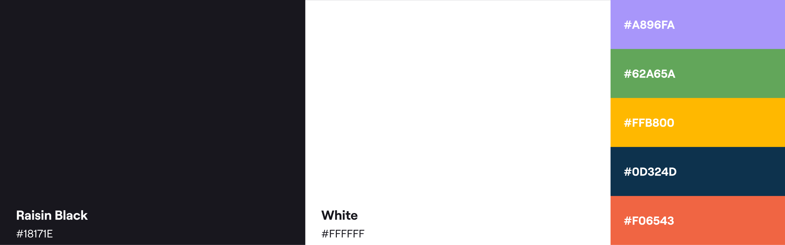
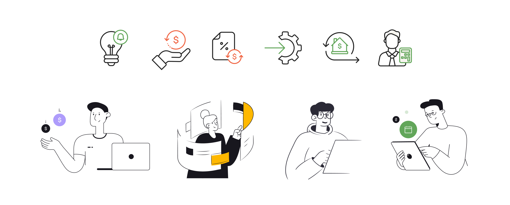
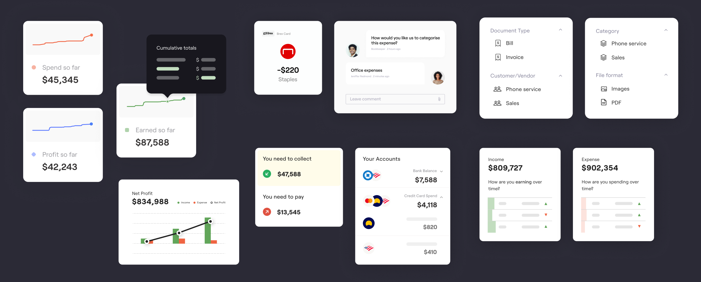

Branding
Brand Refresh for Fincent
Rebranding
Fincent's new brand is all about being lively and modern. We want it to feel energetic, innovative, and friendly. Using vibrant colors shows that Fincent is a forward-thinking, customer-focused, and tech-savvy financial solution provider. The goal is to make Fincent stand out in the industry while still looking professional and trustworthy. The colors chosen aim to make people feel they can trust Fincent, see it as innovative, and get excited about it as a reliable financial partner.

Typography
Roobert is a mono-linear geometrical sans-serif font family, and is also the official primary typeface of Fincent. The italicized variant of this typeface isn't used.


Web Color Usage
This is the ratio that needs to be followed. Our primary colours are used strongly across the page, along with grey hues. Our Tropical Indigo is used as a dominant secondary colour on our website. It is also used to highlight text.

Iconography and Illustrations
Our illustration style is clear and distinctive, using friendly rounded-strokes, in a comic-like-cartoon style. We use secondary colors and shapes to make the images eye-catching and memorable. We focus on simple outlined strokes for icons, along with one of our secondary colours to highlight something. Monochrome versions also can be used.

Product Graphics
We focused on illustrating our product user interface, as the product is the heart of Fincent's brand. We try to keep it as minimal as possible, highlighting only what is important in that screen, removing attention from the jargon.

Imagery
In terms of imagery, we carefully choose visuals that show diversity, inclusivity, and a modern vibe. The pictures need to feature real people in everyday situations, highlighting Fincent as an accessible financial solution for a wide range of users.